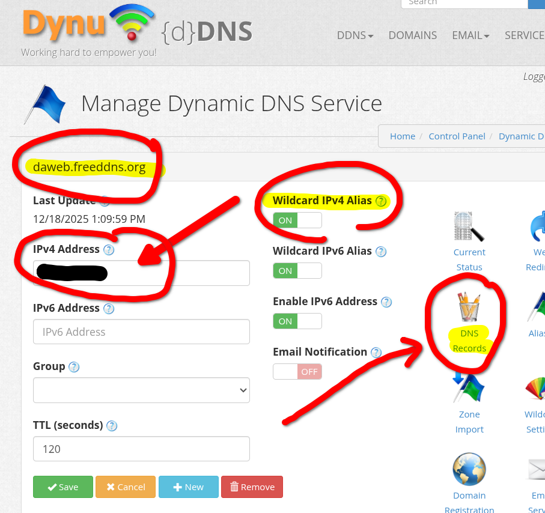
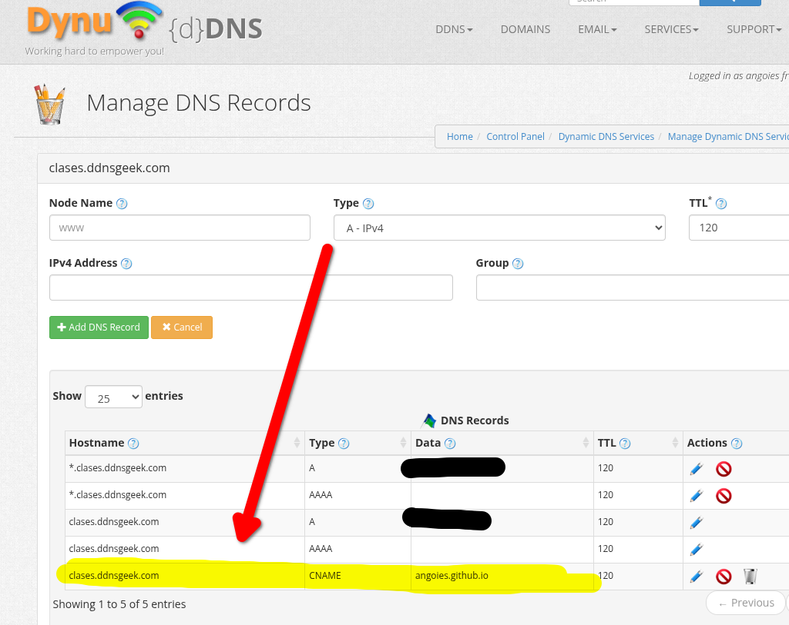
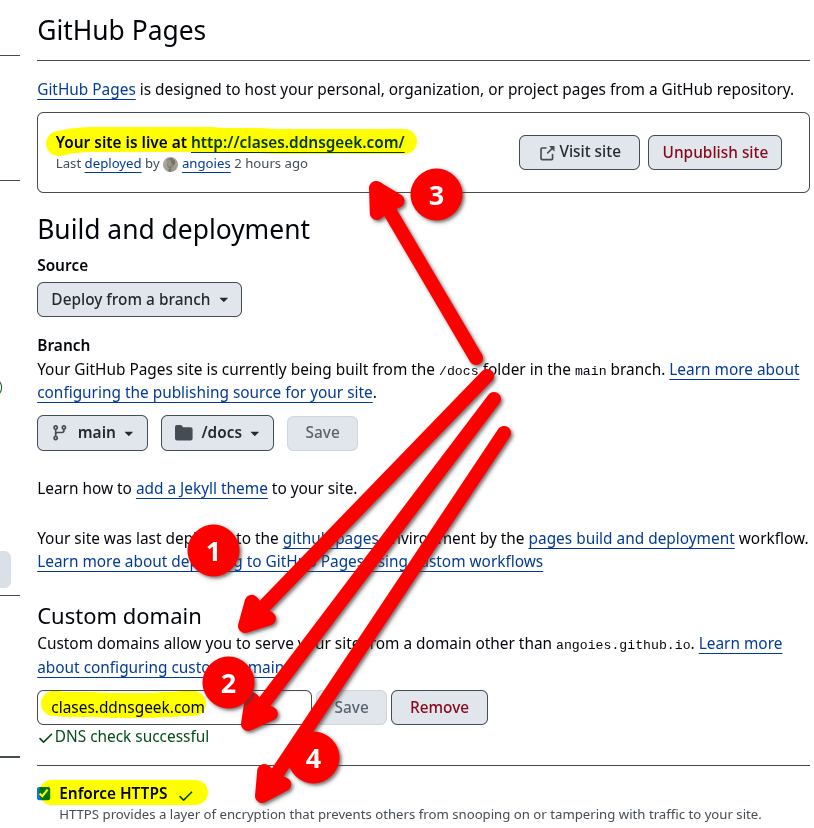
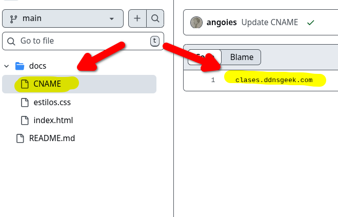
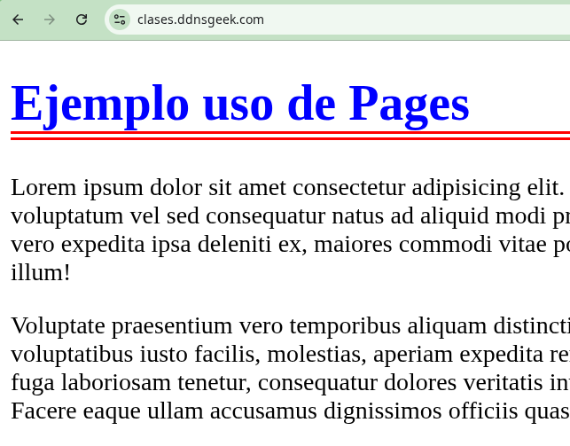

DNS¶
Objetivos:
- Conseguir un nombre de dominio sin coste.
- Asociar ese dominio en GitHub Pages.
1. Dominios gratuitos¶
Hay varias opciones, entre ellas:
- Dynu: https://www.dynu.com/en-US/
- duckdns: Admite wildcards xxx.midominio.duckdns.org y admite registros tipo TXT. https://duckdns.org
- noip.com: https://www.noip.com/es-MX/free
- FreeDNS: http://freedns.afraid.org
- Freenom: https://www.freenom.com/
De entre las opciones posible se muestra Dynu.
2. Dominio en Dynu¶
2.1. Alta¶
Puede darse de alta en https://www.dynu.com/en-US/
2.2. Dominio DDNS¶
Puede añadir un dominio en el menú DDNS, opción SIGN UP. Este debería ser el enlace:
https://www.dynu.com/en-US/ControlPanel/AddDDNS
Debe usar la opción Option 1: Use Our Domain Name, seleccionar uno de sus dominios en el desplegable y elegir un Nombre de Host. Luego pulsar el botón Add

Una vez creado le muestra el dominio y observe que de forma automática le ha asignado una IP a ese dominio. Esa IP es la del equipo del que se está conectando, y lo habitual es que sea la IP pública del router de la red desde la que se esté conectando en ese momento.

3. Configuración Dominio en GitHub Pages¶
Para que su sitio web sea accesible desde un dominio de Dynu (por ejemplo, clases.ddnsgeek.com) necesita:
- En Dynu: Crear un registro de tipo CNAME que apunte su subdominio a la dirección por defecto de GitHub (
suusuario.github.io). - En GitHub: Configurar el repositorio para que acepte las peticiones que lleguen desde ese dominio
3.1. Configuración en Dynu (DNS)¶
Debe decirle a Dynu dónde debe enviar a los usuarios cuando escriban tu nombre de dominio:
- Iniciar sesión en Dynu Control Panel.
- Ir a DDNS Services y añadir su dominio (ej.
clases.ddnsgeek.com). - Buscar la sección de DNS Records (Registros DNS).
- Crear un nuevo registro con los valores:
- Type (Tipo): CNAME
- Node (Host):
www(o déjar vacío si quieres usar el dominio raíz). - Hostname:
su-usuario.github.io(sustituye "su-usuario" por su usuario de GitHub). - TTL: Puede dejar el valor por defecto.

3.2. Configuración en GitHub¶
Ahora debe configurar GitHub:
- Entrar en repositorio de GitHub.
- Ir a Settings (Configuración) > Pages.
- En la sección Custom domain, escribir su dominio de Dynu (ej.
clases.ddnsgeek.com). - Hacer clic en Save.

GitHub creará automáticamente un archivo llamado
CNAMEen el directorio o rama de Pages. Si prefiere hacerlo manualmente, el archivoCNAMEes simplemente un archivo de texto sin extensión que contiene una sola línea:
Una vez guardados los cambios GitHub realiza un "DNS check". Esto puede tardar desde unos minutos hasta horas (propagación DNS). Cuando el check sea correcto podrá marcar la casilla Enforce HTTPS. Esto cifrará la conexión de tu sitio para que sea seguro.
4. Verificación¶
